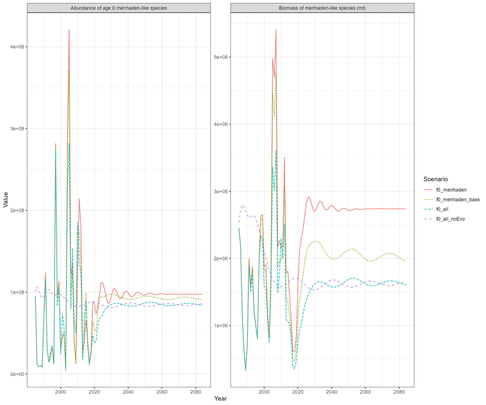
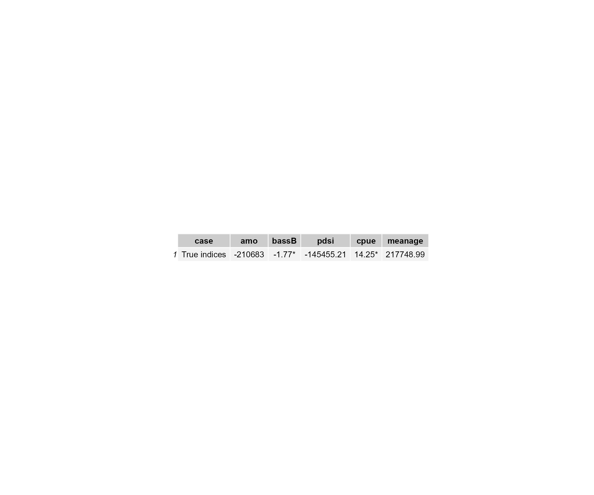
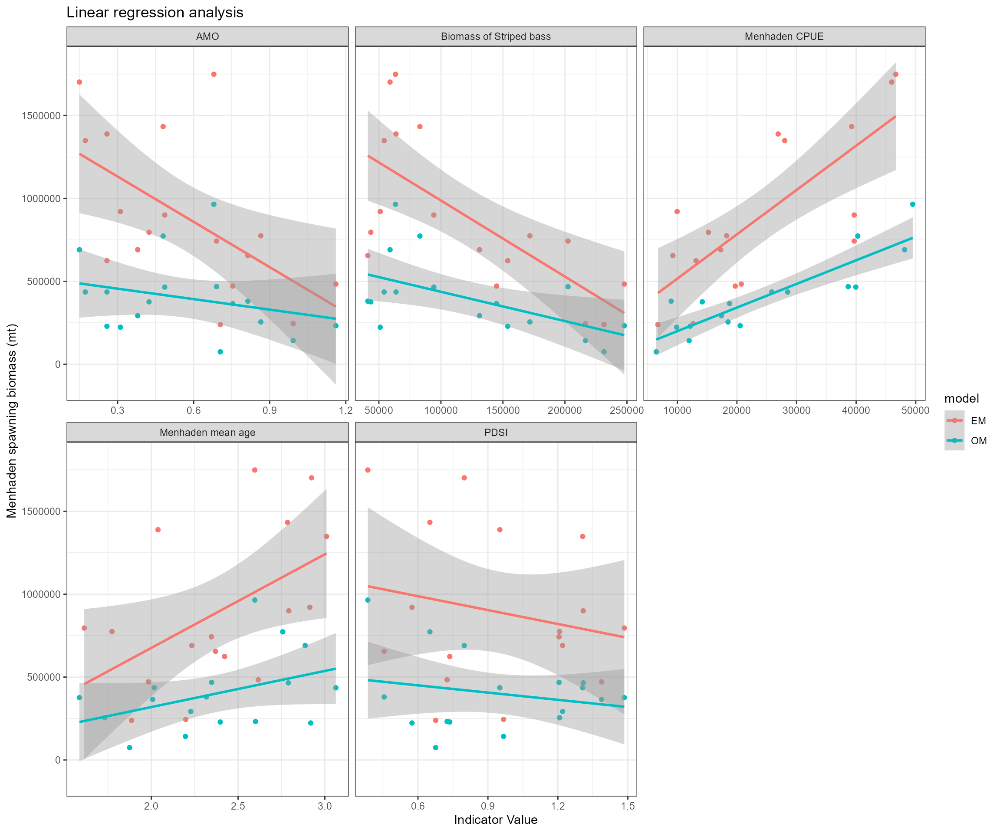
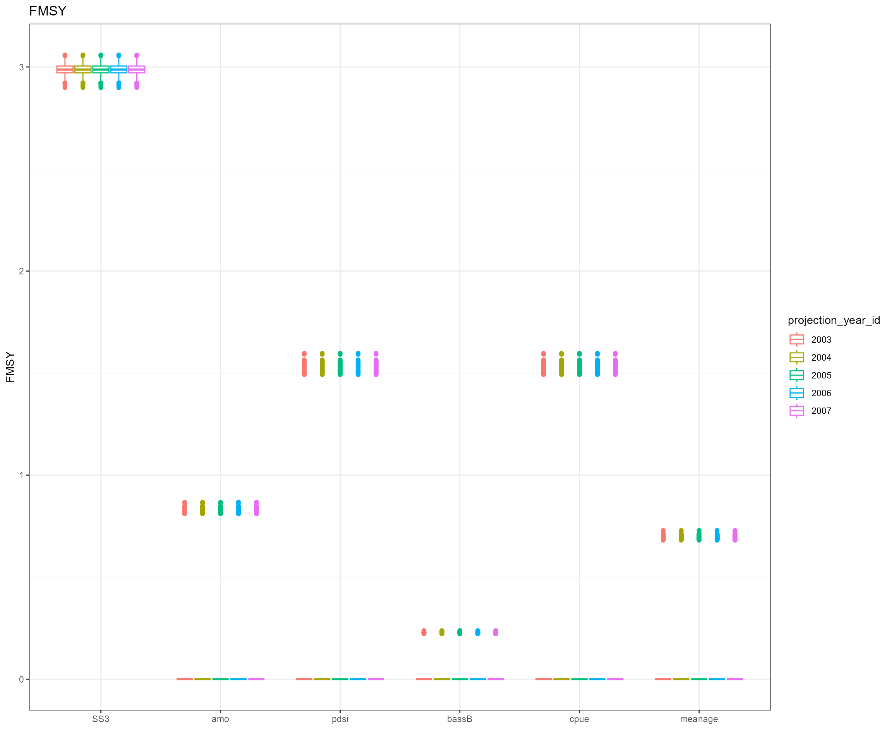
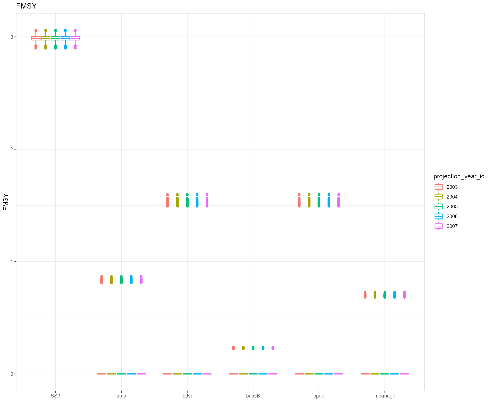
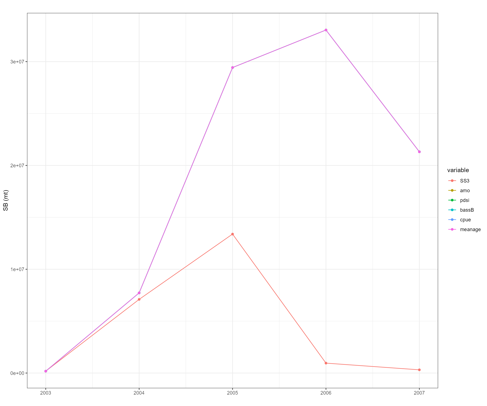
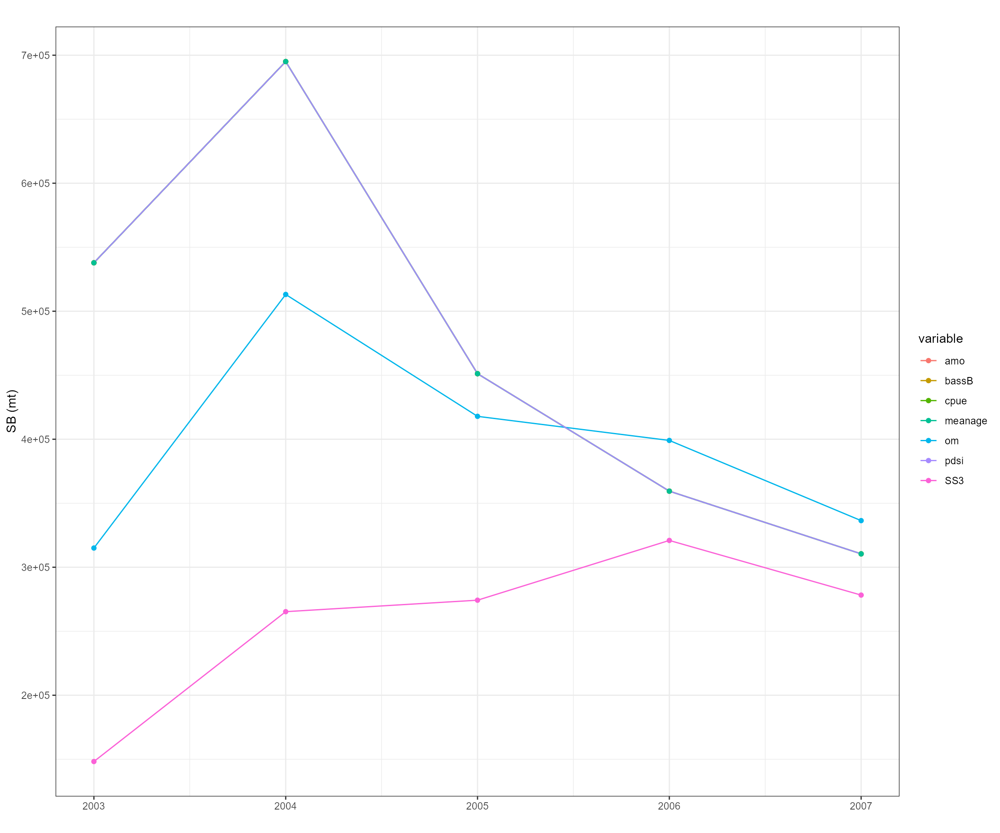

OM3 data-rich stock assessment (2002)
2022-12-05
17_OM3_data_rich_stock_assessment_2002.RmdStock Synthesis 3 (SS3)
- Using Stock Synthesis 3 v3.30.19.01
- Website: https://github.com/nmfs-stock-synthesis/stock-synthesis
Unfished biomass of menhaden-like species and unfished age 0 menhaden-like fish from the EwE operating model

Case 0: stock assessment base run (terminal year = 2002)
print(ss3list$sigma_R_info$alternative_sigma_R[1])## [1] 0.85
print(fmsy)## [1] 3 ## Cases 1-5 are based on the settings from case 0 - Case 1: Link Atlantic Multidecadal Oscillation Index with menhaden biomass estimates and adjust projections: AMO is an indicator of climate conditions and would affect recruitment variability of menhaden-like species - Case 2: Link Palmer drought severity index with menhaden biomass estimates and adjust projections: PSDI is a long-term indicator of drought conditions and it reflects river discharge and precipitation - Case 3: Link biomass of Striped bass from the EwE with menhaden biomass estimates and adjust projections because bass is a major predator - Case 4: Link catch per unit effort of menhaden with menhaden biomass estimates and adjust projections - Case 5: Link mean age for fishing fleet with menhaden biomass estimates and adjust projections
## Cases 1-5 are based on the settings from case 0 - Case 1: Link Atlantic Multidecadal Oscillation Index with menhaden biomass estimates and adjust projections: AMO is an indicator of climate conditions and would affect recruitment variability of menhaden-like species - Case 2: Link Palmer drought severity index with menhaden biomass estimates and adjust projections: PSDI is a long-term indicator of drought conditions and it reflects river discharge and precipitation - Case 3: Link biomass of Striped bass from the EwE with menhaden biomass estimates and adjust projections because bass is a major predator - Case 4: Link catch per unit effort of menhaden with menhaden biomass estimates and adjust projections - Case 5: Link mean age for fishing fleet with menhaden biomass estimates and adjust projections
Notes: here, the biomass estimates are spawning biomass estimates.
-
Linear regression models from case 1 - 5
- True biomass of menhaden-like species as functions of AMO, PDSI, biomass of striped bass, catch per unit effort of menhaden, mean age for fishing fleet ### Status of indicators (SOI)
If stock-indicator relationship is positive, \(SOI_{y} = \frac{I_{y}-I_{y}^{min}}{I_{y}^{max}-I_{y}^{min}}\)
-
If stock-indicator relationship is negative, \(SOI_{y} = 1-\frac{I_{y}-I_{y}^{min}}{I_{y}^{max}-I_{y}^{min}}\)
where \(I_{y}\) represents indicator value in year y. \(I_{y}^{min}\) and \(I_{y}^{max}\) represent the minimum and maximum values of \(I\) from the time series.
Adjust projections
If \(\frac{B2002_{i}}{BMSY} > 1\), \(F^{'}_{i} = FMSY^{min} + SOI2002 \times (FMSY^{max}-FMSY^{min})\)
If \(\frac{B2002_{i}}{BMSY} \le 1\) and \(\frac{B2002_{i}}{BMSY} > 0.5\), \(F^{'}_{i} = SOI2002 \times \frac{B2002_{i}}{BMSY} \times FMSY_{i}\)
If \(\frac{B2002_{i}}{BMSY} \le 0.5\), \(F^{'}_{i} = 0\)
where \(i\) represents individual iterations

 

- Slope values from linear regression models
| case | projection_year | amo | pdsi | bassB | cpue | meanage |
|---|---|---|---|---|---|---|
| PDSI+AMO1 Case | 1 | -910863.74* | -279179.13 | -4.59* | 26.71* | 564589.34* |
| PDSI+AMO1 Case | 2 | -910863.74* | -279179.13 | -4.59* | 26.71* | 564589.34* |
| PDSI+AMO1 Case | 3 | -910863.74* | -279179.13 | -4.59* | 26.71* | 564589.34* |
| PDSI+AMO1 Case | 4 | -910863.74* | -279179.13 | -4.59* | 26.71* | 564589.34* |
| PDSI+AMO1 Case | 5 | -910863.74* | -279179.13 | -4.59* | 26.71* | 564589.34* |
- Project biomass based on \(F_{MSY}\) 

## Average_Catch B_K B_BMSY Average_Biomass
## Max 15168101 9.2425 96.160 43320940
## Min 0 0.0000 0.000 0
## OM+OM FMSY 151542 0.0828 0.140 162525
## OM+SS3 FMSY 214353 0.0748 0.126 193751
## OM+AMO Fadj 151542 0.0828 0.140 162525
## OM+PDSI Fadj 151542 0.0828 0.140 162525
## OM+Bass Biomass Fadj 151542 0.0828 0.140 162525
## OM+CPUE Fadj 151542 0.0828 0.140 162525
## OM+Mean Age Fadj 151542 0.0828 0.140 162525
## SS3 EM+SS3 FMSY 15168101 0.5385 1.400 24351560
## SS3 EM+AMO Fadj 0 9.2425 96.160 43320940
## SS3 EM+PDSI Fadj 0 9.2425 96.160 43320940
## SS3 EM+Bass Biomass Fadj 0 9.2425 96.160 43320940
## SS3 EM+CPUE Fadj 0 9.2425 96.160 43320940
## SS3 EM+Mean Age Fadj 0 9.2425 96.160 43320940
## Bonanza_Period Collapse_Period
## Max 5 0
## Min 0 5
## OM+OM FMSY 0 5
## OM+SS3 FMSY 0 5
## OM+AMO Fadj 0 5
## OM+PDSI Fadj 0 5
## OM+Bass Biomass Fadj 0 5
## OM+CPUE Fadj 0 5
## OM+Mean Age Fadj 0 5
## SS3 EM+SS3 FMSY 5 0
## SS3 EM+AMO Fadj 5 0
## SS3 EM+PDSI Fadj 5 0
## SS3 EM+Bass Biomass Fadj 5 0
## SS3 EM+CPUE Fadj 5 0
## SS3 EM+Mean Age Fadj 5 0